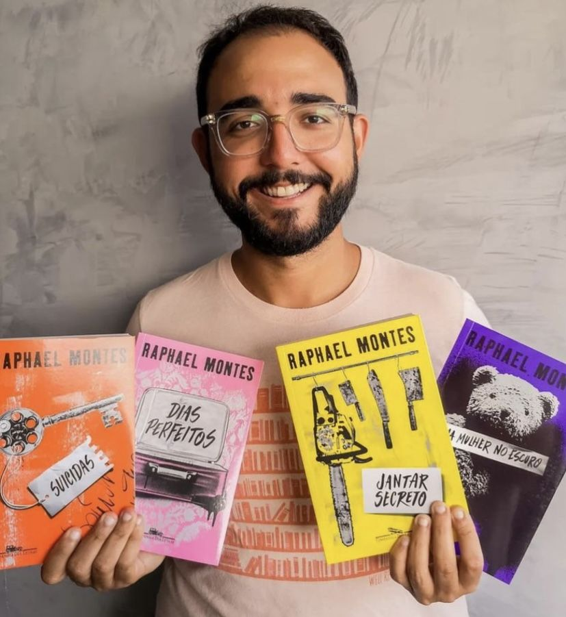
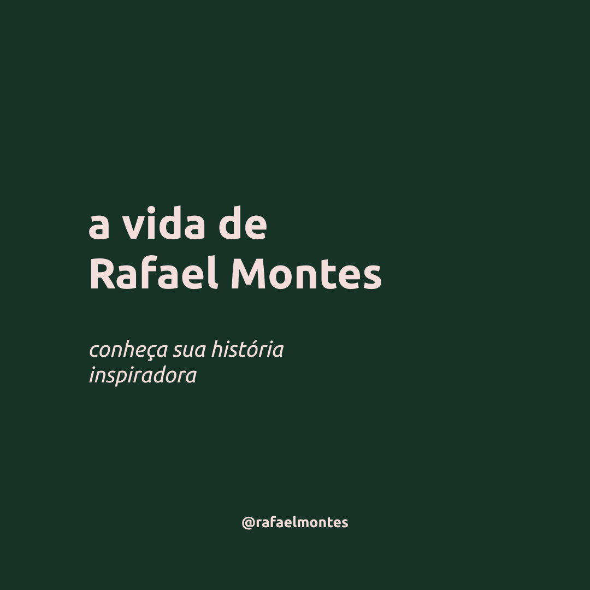
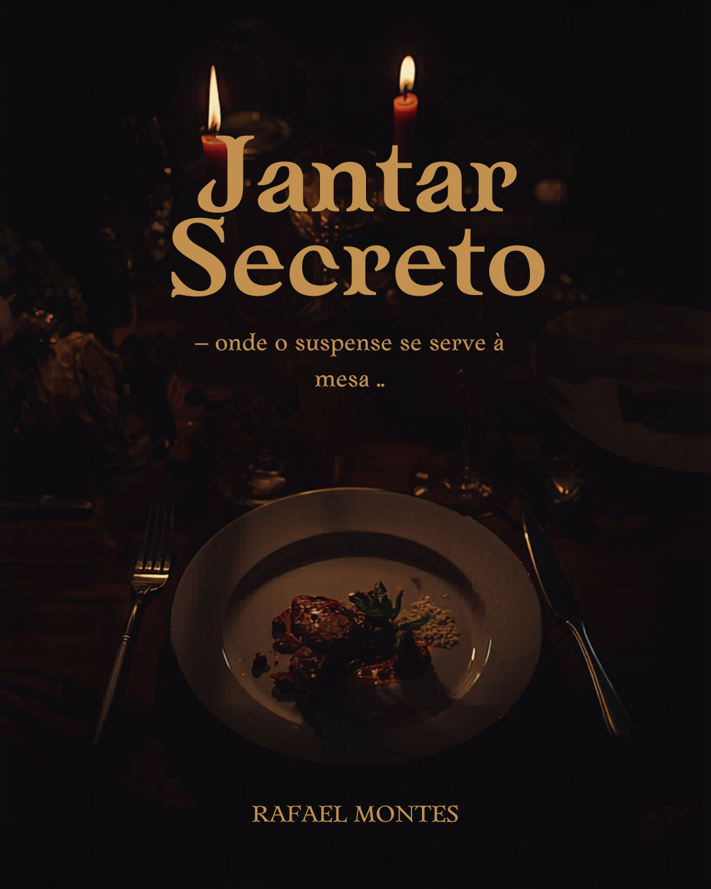

3
publicações
171
seguidores
170
seguindo
Raphael Montes de Carvalho
Contemporâneo · 1990 – Ano falecimento
Raphael Montes de Carvalho (nascido em 22 de setembro de 1990) é um romancista policial e advogado brasileiro . Ele foi duas vezes finalista do Prêmio Jabuti , vencendo uma vez.
Rio de Janeiro - RJ
🔗 Obra principal ou obra mais conhecida
Rio de Janeiro - RJ
Stories
.jpg)
.jpg)
.jpg)
Destaques

🤍 Seja o primeiro a curtir
@rafael_montes
Raphael Montes é um escritor, roteirista e advogado brasileiro, conhecido principalmente por seus romances de suspense, terror psicológico e investigação criminal. Nasceu no Rio de Janeiro em 1990 e ganhou destaque ainda jovem por criar histórias cheias de mistério, violência psicológica e críticas sociais. Entre suas obras mais famosas estão Jantar Secreto, Suicidas e Bom Dia, Verônica. ✨
Ver todos os comentários
@prof_literatura
Ótimo post! Que obra incrível! 📚
Há 30 minutos

🤍 Seja o primeiro a curtir
@rafael_montes
📚🔪 Jantar Secreto, de Raphael Montes, é um suspense intenso que mistura mistério, crítica social e escolhas extremas. A obra mostra até onde alguém pode chegar em busca de dinheiro, sucesso e sobrevivência. 👀 Entre segredos, violência e tensão psicológica, o livro conquista leitores com uma narrativa envolvente e cheia de reviravoltas. ✨ Temas abordados: desigualdade social, ambição, moralidade, amizade, corrupção humana. Você teria coragem de descobrir o que acontece nesse jantar? 🍽️📖
Ver todos os comentários
@leitor_apaixonado
Adorei esse autor! Muito representativo do período. 🌟
Há 12 horas

🤍 Seja o primeiro a curtir
@usuario_do_escritor
O REI DO THRILLER NACIONAL! 🔪🇧🇷Se você ama um bom suspense, precisa conhecer o legado de Raphael Montes. Ele revolucionou a literatura policial no Brasil e provou que o nosso país sabe fazer mistério com qualidade internacional! 🌍O que faz dele um fenômeno?📚 +1 Milhão de Livros Vendidos: Autor nacional recordista de vendas traduzido para mais de 25 países.🏆 Vencedor do Prêmio Jabuti: Reconhecimento máximo da literatura com "Uma Mulher no Escuro".🎬 Mestre do Audiovisual: Criador da série de sucesso "Bom Dia, Verônica" (Netflix) e da novela "Beleza Fatal".🧠 Suspense com Propósito: Suas histórias chocam, mas sempre debatem a mente humana e problemas sociais reais.Um verdadeiro orgulho da cultura brasileira contemporânea! ❤️💬 Me conta nos comentários: Qual livro ou série do Raphael Montes te deixou mais sem fôlego?👇
Ver todos os comentários
@turma_literatura
Que trabalho incrível! Parabéns! 🎉
Há 1 semana